Perpustakaan Al-Hikmah, SMP IT Bina Bangsa Sejahtera
Kedai Baca
Ketika kamu ragu akan sesuatu, carilah di perpustakaan.
Di sini kamu bisa
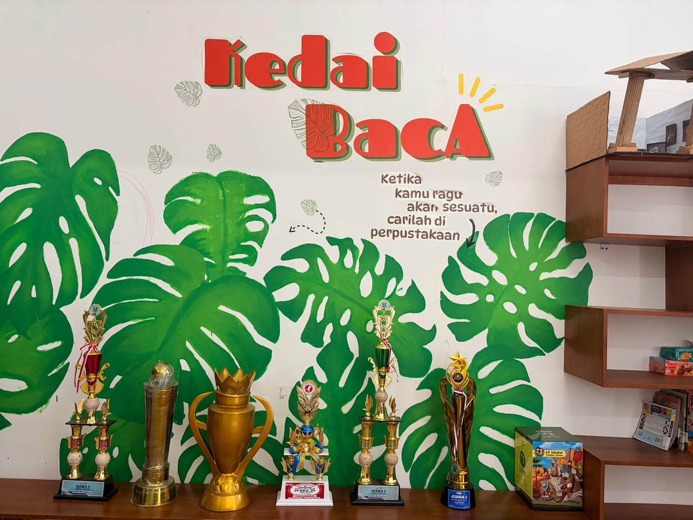
Buka Senin–JumatE-book kapan sajabaca!
Bukan sekadar tempat menyimpan buku
Perpustakaan melayani siswa, guru, dan staf untuk membaca, mencari referensi, dan belajar literasi digital setiap hari. Katalog dikelola lewat SLiMS, jadi kamu bisa cek koleksi dan ketersediaannya kapan saja, dari mana saja.
Cara pakai, tiga langkah
Dari cari buku sampai kasih saran, semuanya bisa dilakukan dari HP.
Cari bukunya
Buka Digilib, ketik judul atau pengarang, lalu cek status tersedia.
Pinjam atau baca
Datang ke perpustakaan untuk meminjam, atau baca e-book langsung dari layarmu.
Ceritakan pendapatmu
Usul buku baru lewat formulir, dan ikuti kabar kegiatan di blog.
Rak e-book
Klik salah satu buku di rak. Halamannya bisa dibalik seperti buku asli, dengan klik panah atau geser layar.
Lihat semua koleksiSekilas isi rak
Sebagian judul koleksi e-book kami. Arahkan kursor atau tahan sampul untuk menghentikan geserannya.
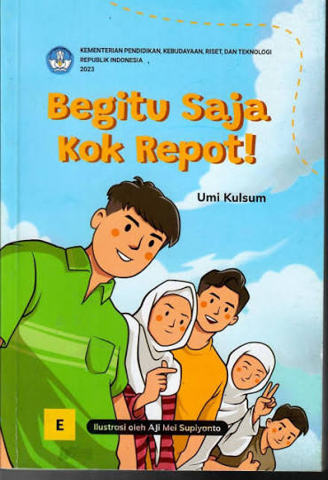
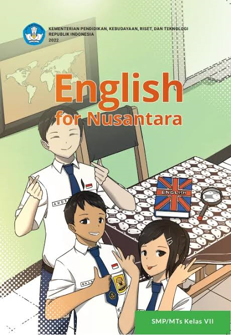
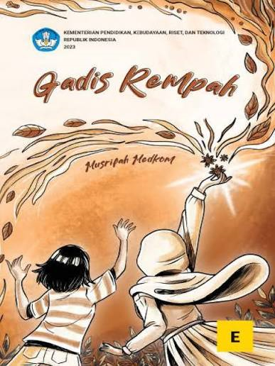
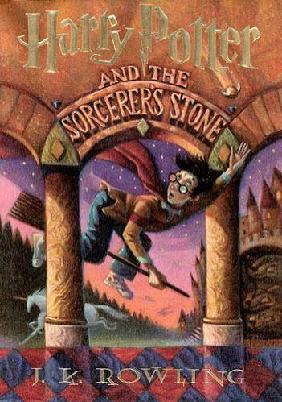
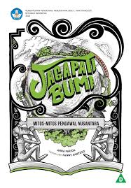
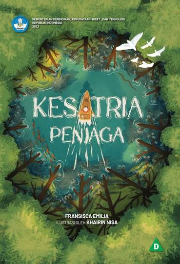
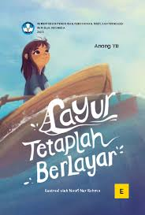
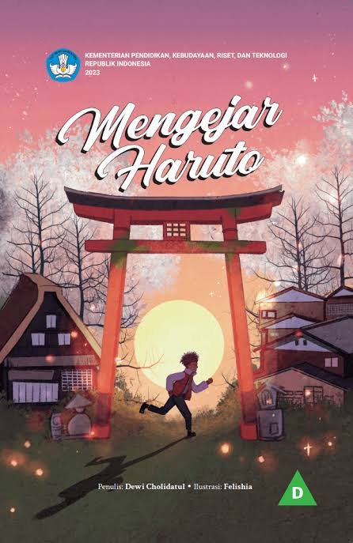
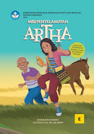
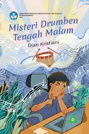
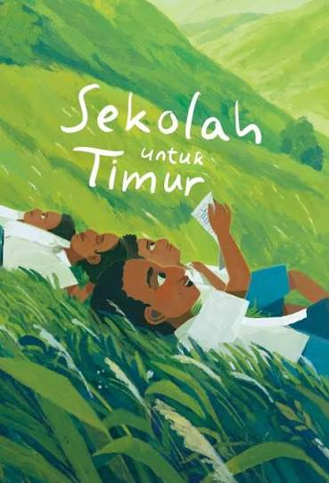
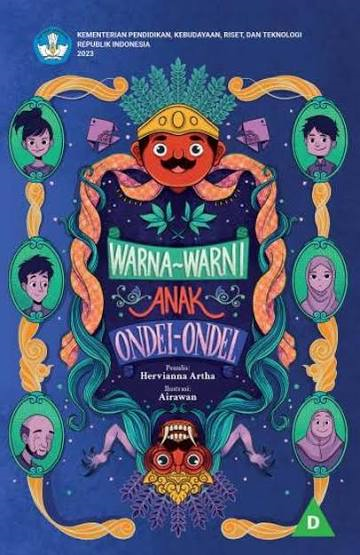
Kuis: buku apa yang cocok untukmu?
Tiga pertanyaan singkat, lalu kami carikan bacaan dari rak e-book.
Galeri kegiatan
Potret suasana dan kegiatan di perpustakaan.
Buku apa yang cocok untukmu?
Jawab dua pertanyaan singkat, nanti kami pilihkan satu judul dari koleksi.
Galeri kegiatan
Sudut-sudut perpustakaan dan penghargaan sekolah. Klik foto untuk memperbesar.

Struktur Organisasi
Pimpinan dan pengelola Perpustakaan SMP IT BBS.
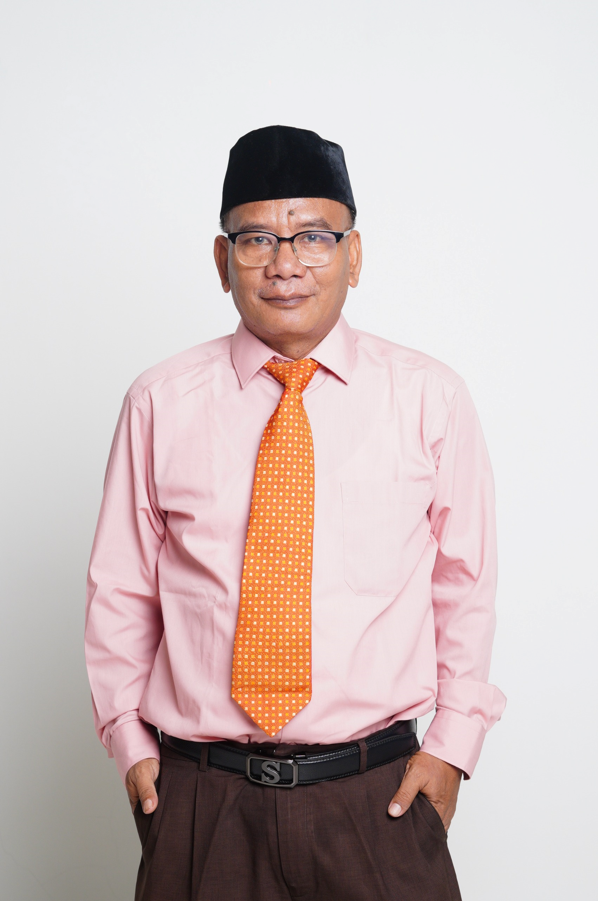
Syabar Suwardiman, S.Sos, M.Kom.Kepala Sekolah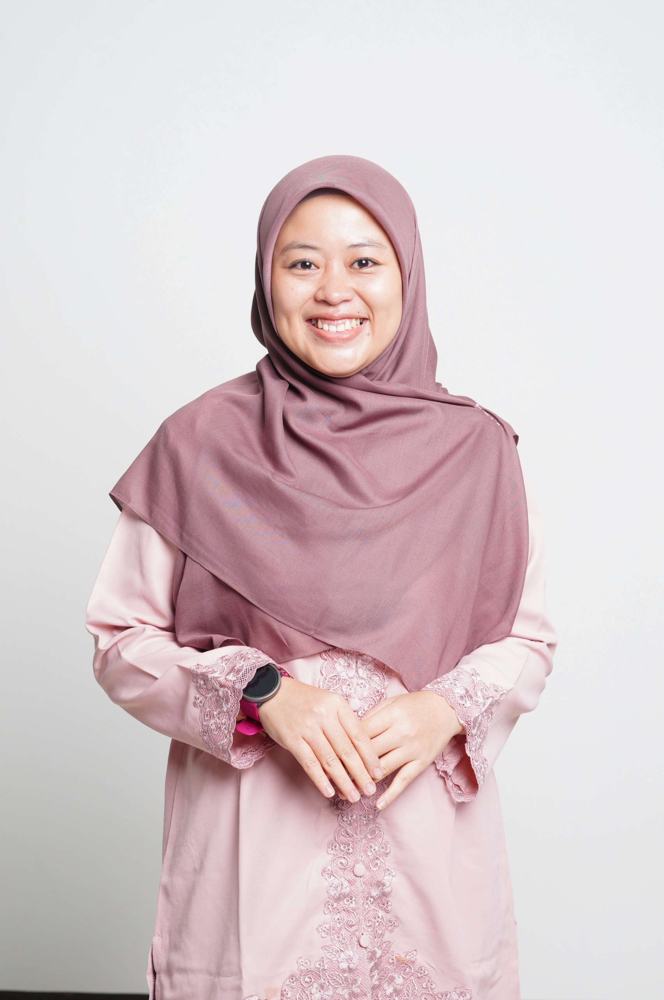
Nailul Hikmah, M.Si.Kepala Perpustakaan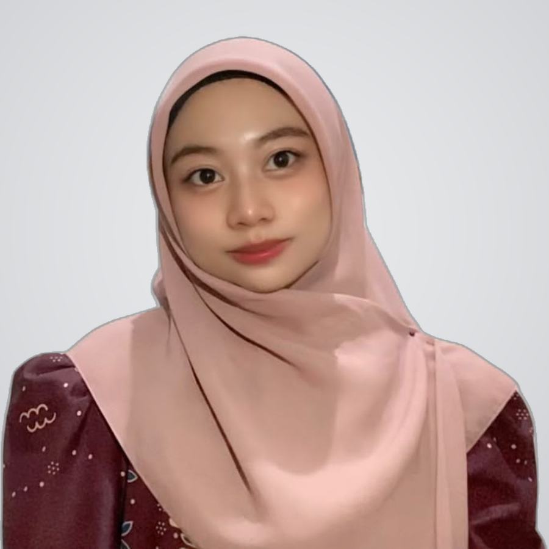
Gita Safta MarlinaPustakawanSemua pintu masuk di sini
Pilih yang kamu butuhkan: cari buku, baca e-book, ikuti kabar terbaru, atau kirim saran.
Katalog Perpustakaan
Cari buku dan cek apakah masih tersedia.
Buka Digilib E-Resource, flipbookKoleksi Digital dan E-Book
Baca buletin, majalah sekolah, dan e-book seperti buku sungguhan.
Buka E-Resource BlogBerita dan Kegiatan
Kegiatan literasi, resensi buku, dan pengumuman perpustakaan.
Buka Blog Kotak SaranUsul Buku atau Masukan
Mau buku tertentu ada di sini? Tulis usulanmu.
Isi formulirSering ditanyakan
Bagaimana cara mencari buku?
Buka Digilib, ketik judul, pengarang, atau subjek. Status ketersediaan buku tampil di halaman detail.
Bagaimana cara membaca e-book?
Buka Koleksi Digital, pilih koleksi, lalu balik halamannya seperti buku biasa. Buku referensi guru hanya bisa dibaca, tidak bisa diubah.
Kapan perpustakaan buka?
Senin sampai Jumat, pukul 07.30 sampai 15.30.
Boleh usul judul buku baru?
Boleh. Isi formulir Kotak Saran dan tulis judul yang kamu inginkan.
Mampir atau hubungi kami
Perpustakaan buka hari sekolah. Datang saja, pustakawan siap bantu.
- Alamat
- JL. Batuhulung KM 7 RT 003 RW 002, Kel. Margajaya, Kec. Bogor Barat, Kota Bogor 16116
Lihat di peta - perpus.smpitbbs@gmail.com
- Jam buka
- Senin sampai Jumat, 07.30 sampai 15.30
Ada kritik atau saran?
Tulis kritik, saran, masukan, atau komentar tentang Perpustakaan SMP IT BBS di formulir.
Isi formulir saran